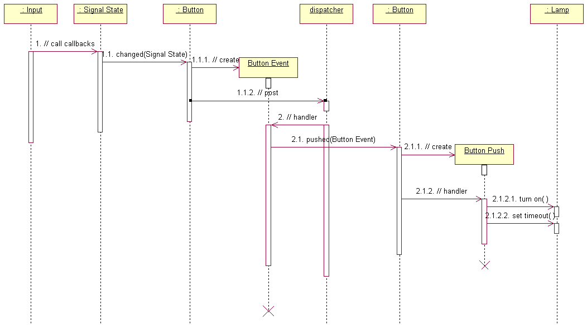
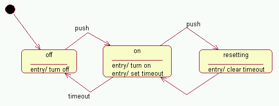

All code is executed in the context of some Ada task. There are three relevant kinds of task:
and you must make sure that a domain's data is manipulated in a way that's safe from concurrent access by more than one of these tasks.
A common pattern, which might be called "access domain data from domain events", is shown in the sequence diagram below. In it, the only task which accesses a domain's data is the dispatcher task associated with its event queue.

All code in the discussion below is from the House Management domain in the example/ subdirectory of the distribution.
Operation 1 occurs in the Digital IO domain, in the context of Digital IO's event queue.
Operation 1.1 is the callback of the registered operation Button.Changed, still in Digital IO's context. This creates a new Button Event, whose payload is the pushed button's name (Operation 1.1.1), and posts it onto House Management's event queue (Operation 1.1.2):
declare
E : constant ColdFrame.Project.Events.Event_P
:= new Button_Event;
P : Button_Name renames Button_Event (E.all).Payload;
begin
P := Buttons (S.S);
ColdFrame.Project.Events.Post (E, On => Events.Dispatcher);
end;
Operation 2 represents the firing of the Button Event when it reaches the head of the House Management event queue, in the House Management context. The generated Handler calls the «handler» operation Button.Pushed (Operation 2.1), which, instead of posting another event, creates a Button Push event for the Lamp concerned (Operation 2.1.1) on the stack and then invokes its generated Handler (Operation 2.1.2):
procedure Button_Pushed (L : Lamp.Handle) is
Ev : Lamp.Button_Push (For_The_Instance => L);
begin
Lamp.Handler (Ev);
end Button_Pushed;
The generated body of Lamp.Handler includes the code
case This.State_Machine_State is
when Idle =>
This.Old_State_Machine_State := Idle;
This.State_Machine_State := Lit;
Turn_On (This);
Set_Timeout (This);
which corresponds to Operation 2.1.2.1 and Operation 2.1.2.2 and completes the processing.
This style of event processing, which could be called synchronous, is subject to one limitation: if an action needs to create an event on the same instance of the same class, the event must be posted rather than being processed synchronously. There's no logical difference between the synchronous and posting styles; posting is more consistent, while synchronous is more efficient (it saves a memory allocation/freeing and a couple of context switches, perhaps 20 to 30 microseconds on a 1 GHz PowerPC under VxWorks).
The typical code for posting an event Ev is
ColdFrame.Project.Events.Post (Ev, On => Events.Dispatcher);
Clearly Ev has to be created. If it's a class event of type Wait to class Class, this would be
Ev : constant ColdFrame.Project.Events.Event_P
:= new Class.Wait;
whereas if it's an instance event, and we have a handle H, it would be
Ev : constant ColdFrame.Project.Events.Event_P
:= new Class.Done (H);
If you need to set the payload, add a renaming:
Ev : constant ColdFrame.Project.Events.Event_P
:= new Class.Info;
Payload : Message renames Class.Info (Ev.all).Payload;
where
In total,
declare
Ev : constant ColdFrame.Project.Events.Event_P
:= new Class.Info;
Payload : Message renames Class.Info (Ev.all).Payload;
begin
Payload := Some_Value;
ColdFrame.Project.Events.Post (Ev, On => Events.Dispatcher);
end;
Of course, if you don't need a payload, it's much simpler:
ColdFrame.Project.Events.Post (new Class.Done (H),
On => Events.Dispatcher);
An earlier version of the example state model was

If the task executing Is_On isn't the same one as that executing the state machine, there is a possibility that Is_On may catch the instance in an intermediate state (in this case, the state Resetting). There are two approaches to this problem.
In the simpler, it's clear that Resetting is an intermediate state; the state machine bounces immediately back to On via a completion transition, so Is_On could be coded
function Is_On (This : Handle) return Boolean is
begin
return This.State_Machine_State = On
or else This.State_Machine_State = Resetting;
end Is_On;
If the simple approach isn't good enough, it's possible to lock the domain's event queue:
function Is_On (This : Handle) return Boolean is
L : ColdFrame.Project.Events.Lock (Events.Dispatcher);
pragma Warnings (Off, L);
begin
return This.State_Machine_State = On;
end Is_On;
After the Lock L has been elaborated, ColdFrame guarantees that
Note that there's no guarantee about the relative timing of events and locks; you could post an event and then take a lock, but the event may or may not have been handled when the lock is achieved.
There's no reason why an active class can't have a state machine as well, though you have to be careful about concurrent access to instance variables and about initialization, especially of «singleton»s.
This idiom can be very useful to deal with interrupt handling; see Interrupt_Handling in the example/ subdirectory of the distribution.